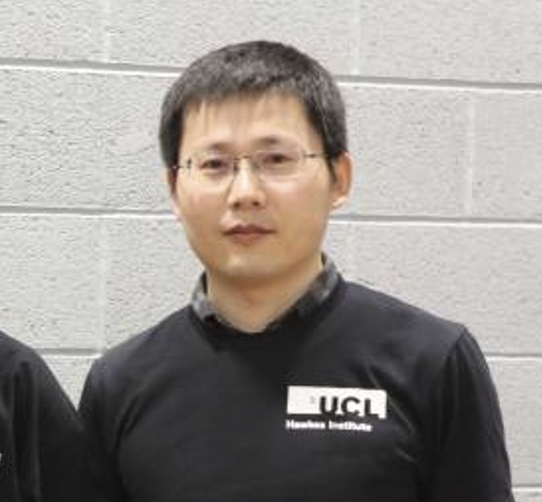
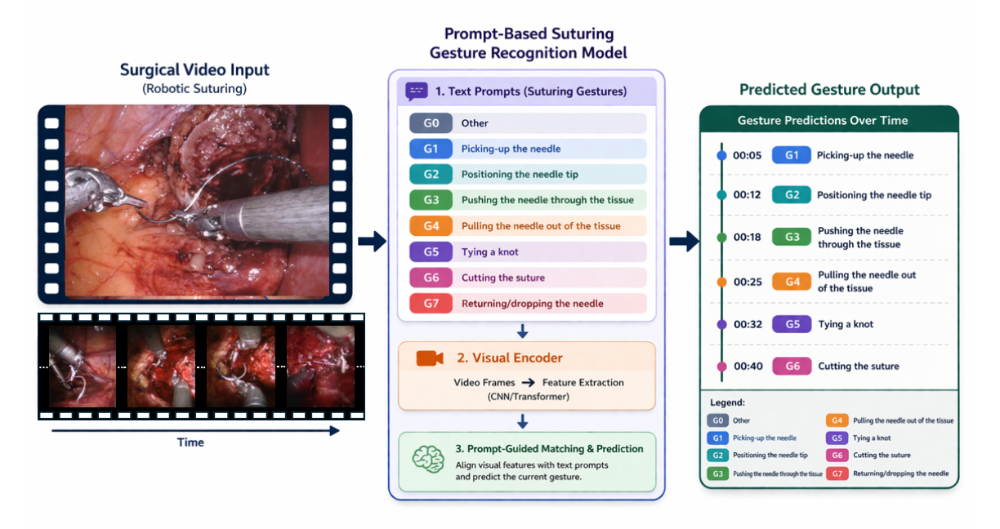
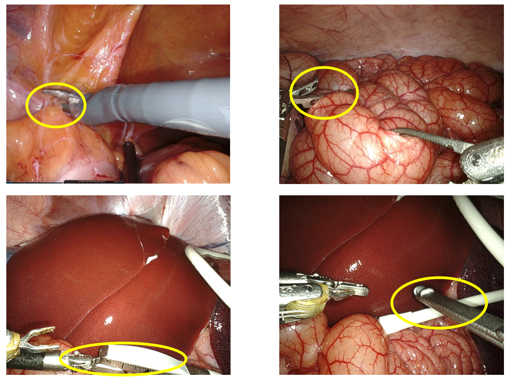
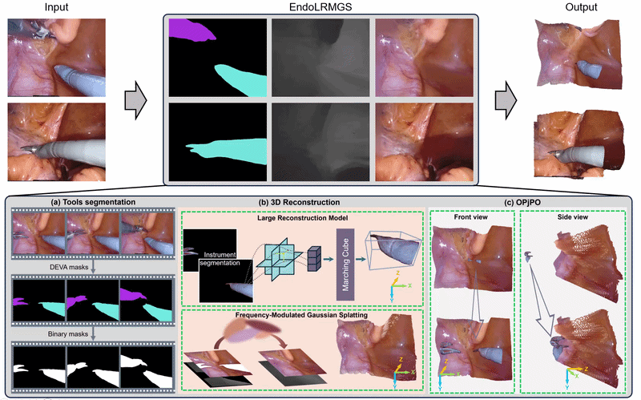
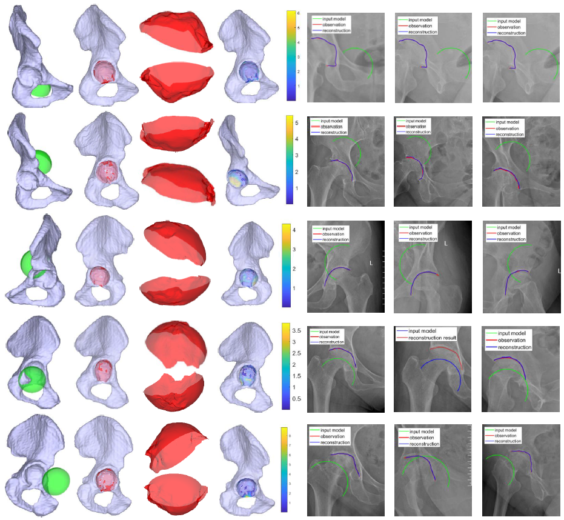
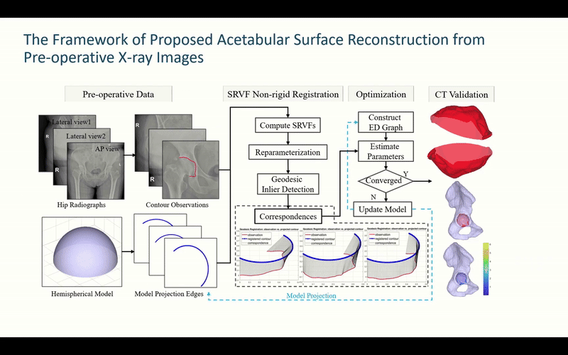
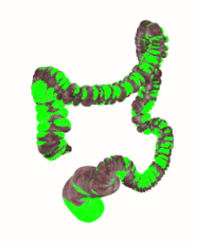
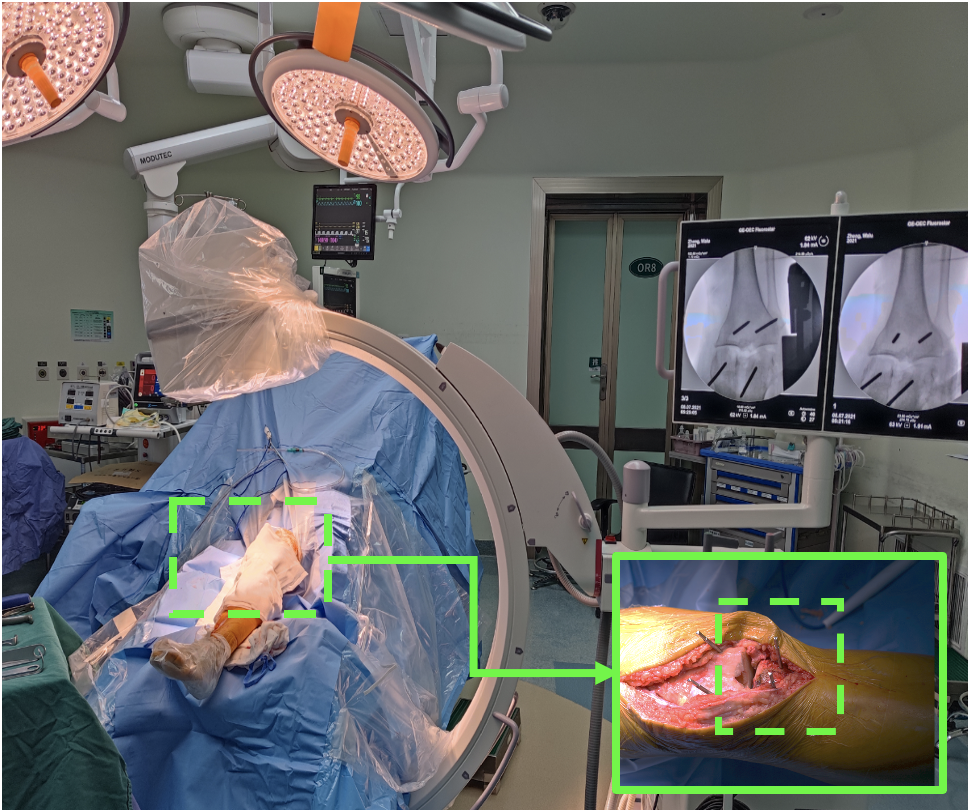
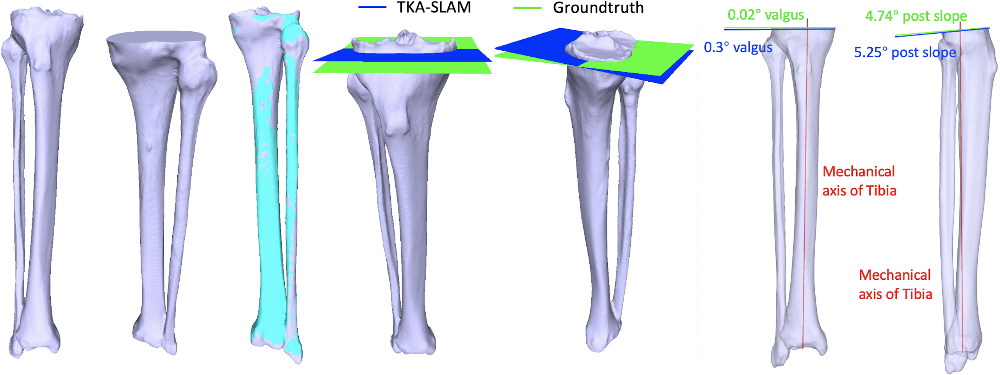

Shuai ZHANG
I am a Senior Research Fellow at the Department of Computer Science, University College London (UCL), working with Prof. Danail Stoyanov. I received my Ph.D. from the Robotics Institute at the University of Technology Sydney, under the supervision of Dr. Liang Zhao and Prof. Shoudong Huang. My research is focused on developing surgical robotics and artificial intelligence for improving surgical outcomes and robot-assisted interventions. Recently, I have been working on surgical systems in orthopaedic robotics, endoscopic robotics, and automated surgical workflow insights.
Email / Google Scholar / ORCiD
News
Recent Projects
My recent projects span orthopaedic robotics, endoscopic robotics, and surgical workflow understanding, with a particular focus on developing AI and robotic algorithms for image-guided robotic surgery, including surgical scene reconstruction and action recognition, 3D human organ reconstruction, deformation recovery, and surgical tool localisation and navigation.

Surgical action recognition is an important building block in computer-assisted intervention, supporting applications such as surgical skill assessment and intraoperative decision support. This project aims to develop prompt-based frameworks for surgical action recognition in the medical domain.


Technical Details | Code and dataset
Complete reconstruction of surgical scenes is crucial for robot-assisted surgery. We propose EndoLRMGS, that combines Large Reconstruction Modelling (LRM) and Gaussian Splatting (GS), for complete surgical scene reconstruction. GS reconstructs deformable tissues and LRM generates 3D models for surgical tools while position and scale are subsequently optimized by introducing orthogonal perspective joint projection optimization to enhance accuracy.


Technical Details | Code and dataset
This work proposes a novel framework that integrates square-root velocity function (SRVF)-based elastic shape registration technique with an embedded deformation (ED) graph approach to reconstruct the 3D articular surface of the acetabulum by fusing multiple views of 2D pre-operative pelvic X-ray images and a hemispherical surface model. Validations using both simulation and real patient datasets are performed to demonstrate the robustness and the potential clinical value of the proposed algorithm. The reconstruction result can assist surgeons in selecting the correct acetabular cup on the first attempt in primary THA, minimising the need for revision surgery.



Developed Colonoscopy Simulator and Source Code | Technical Details
In this research project, I focused on developing SLAM-based frameworks to reconstruct the 3D maps of the deformable human colon from standard colonoscopy procedures, thus the unsurveyed regions (where precancerous polyps may reside) can be shown on the reconstructed colon maps and help colonoscopists to ensure more colonic surfaces are inspected and to reduce polyps missing rate. Due to the unavailability of complete colonoscopy datasets, I developed a realistic colonoscopy simulator that can simulate the colonoscopy procedures and generate complete colonoscopy datasets for validation of deformable reconstruction algorithms. The developed simulator was made publicly available to promote research in the field.


Technical Details | Code and dataset
In this research project, novel SLAM algorithms were developed to improve bone resection accuracy in total knee arthroplasty (TKA). The proposed framework can precisely and real-timely pre-estimate the proximal tibial resection plane such that the evaluation processing does not need any external fiducials and does not interrupt the working flow of TKA.
Talks
Academic Supervision
Teaching Experience
Selected Publications
Conference Papers:
- 3D Acetabular Surface Reconstruction from 2D Pre-operative X-ray Images using SRVF Elastic Registration and Deformation Graph
Shuai Zhang, Jinliang Wang, Sujith Konandetails, Xu Wang, Danail Stoyanov, Evangelos B Mazomenos
MICCAI 2025 | paper - Gaussian pancakes: geometrically-regularized 3d gaussian splatting for realistic endoscopic reconstruction
Sierra Bonilla, Shuai Zhang, Dimitrios Psychogyios, Danail Stoyanov, Francisco Vasconcelos, Sophia Bano
MICCAI 2024 | paper - 3D Reconstruction of Tibia and Fibula using One General Model and Two X-ray Images
Kai Pan, Shuai Zhang*, Liang Zhao, Shoudong Huang, Hua Wang, Qi Luo
ICRA 2023 | paper - SLAM-TKA: Real-time Intra-operative Measurement of Tibial Resection Plane in Conventional Total Knee Arthroplasty
Shuai Zhang, Liang Zhao, Shoudong Huang, Hua Wang, Qi Luo, Qi Hao
MICCAI 2022 | paper - 3D Reconstruction of Deformable Colon Structures based on Preoperative Model and Deep Neural Network
Shuai Zhang, Liang Zhao, Shoudong Huang, Rui Ma, Boni Hu, Qi Hao
ICRA 2021 | paper - Linear Bayesian Filter based Low-cost UWB Systems for Indoor Mobile Robot Localization
Shuai Zhang, Ruihua Han, Wankuan Huang, Shuaijun Wang, and Qi Hao
IEEE SENSORS 2018 | paper - An Integrated UAV Navigation System Based on Geo-registered 3D Point Cloud
Shuai Zhang, Shuaijun Wang, Chengyang Li, Guocheng Liu, Qi Hao
MFI 2017 | paper - A Camera-based Real-time Polarization Sensor and its Application to Mobile Robot Navigation
Shuai Zhang, Huawei Liang, Hui Zhu, Daobin Wang, Biao Yu
ROBIO 2014 | paper
Journals:
- EndoLRMGS: Complete endoscopic scene reconstruction combining large reconstruction modelling and gaussian splatting
Xu Wang, Shuai Zhang*, Baoru Huang, Danail Stoyanov, and Evangelos B Mazomenos.
IEEE Transactions on Medical Imaging 2026 | paper - Direct Camera-Only Bundle Adjustment for 3D Textured Colon Surface Reconstruction Based on Pre-operative Model
Shuai Zhang, Liang Zhao, Shoudong Huang, Evangelos B Mazomenos, Danail Stoyanov
IEEE TMRB 2024 | paper - SLAM-TKA: Simultaneously Localising X-ray Device and Mapping Pins in Conventional Total Knee Arthroplasty
Shuai Zhang, Liang Zhao, Shoudong Huang, Hua Wang, Qi Luo, Qi Hao, Danail Stoyanov
IEEE TMRB 2024 | paper | Code and dataset - A Template-Based 3D Reconstruction of Colon Structures and Textures From Stereo Colonoscopic Images
Shuai Zhang, Liang Zhao, Shoudong Huang, Menglong Ye, and Qi Hao
IEEE TMRB 2020 | paper | Developed Colonoscopy Simulator